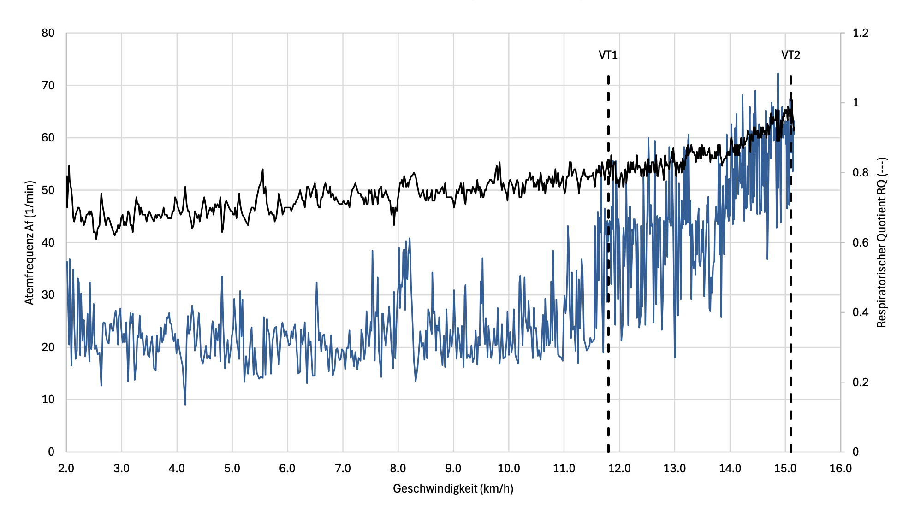

The respiratory quotient RQ shows how efficiently oxygen can be utilized at the cellular level: The lower the RQ, the higher the proportion of metabolized oxygen, which is directly related to fat oxidation.
In addition, RQ is a good measure of cellular health. It is calculated from the ratio between absorbed oxygen (VO2) and exhaled carbon dioxide (VCO2).
The relationship to respiratory frequency Af also shows what role the respiratory aspect plays in the efficiency of metabolism.
The respiratory frequencies at the most important points of the metabolic profile can also be used as secondary metrics in training and competition.
Respiratory Frequencies and Respiratory Quotient at the Key Points of the Metabolic Profile:
|
Speed |
Af |
RQ |
| Ventilatory Threshold 1 (VT1) |
11.8 km/h |
40 |
0.81 |
| Ventilatory Threshold 2 (VT2) |
15.1 km/h |
65 |
0.98 |
| Maximum Fat Burning (FatMax) |
11.2 km/h |
24 |
0.81 |
| Maximum Oxygen Uptake Capacity (VO2Max) |
15.2 km/h |
63 |
0.93 |
Since many sports watches now also evaluate data on respiratory frequency, these reference points can be used to control whether the body is in the vicinity of the intended intensities during training.
Drastic changes in respiratory work can also indicate both training progress and possible setbacks.